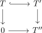
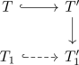
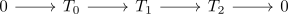

torsion pair is quasiabelian
Proposition
Let $(\mathcal{T}, \mathcal{F}) \subseteq \mathcal{A}$ be a torsion pair Then both $\mathcal{T}, \mathcal{F}$ are quasi-abelian.
Proof
$\mathcal{T}$
using
additive
We claim that $\mathcal{T} \subseteq \mathcal{A}$ is closed under biproducts For that we use the characterization of the essential image, i.e. it suffices to show $\mathrm{Hom}_{\mathcal{A}}(T_1 \oplus T_2, F) \simeq 0$ for arbitrary $F \in \mathcal{F}$ Here we use
existence of kernels / cokernels
Note that in particular colimits are computed in $\mathcal{A}$
strict mono
for that we note that the strict monomorphisms are precisely the strict monomorphisms in $\mathcal{A}$, i.e. each monomorphisms i. strict. This follows since we can compute quotients underlying in $\mathcal{A}$ and then the diagram

is bicartesian and fully faithful functor detects limits & fully faithful functor detects colimits
Furthermore we may compute the pushout of an arbitrary map (so in particular a strict monomorphism) in $\mathcal{A}$

and get that the dashed morphism is a mono in $\mathcal{A}$, hence in particular strict.
strict epi
We claim that an epimorphism $T \rightarrow T'$ is strict if and only if its kernel computed in $\mathcal{A}$ lies in $\mathcal{T}$. If so, then we may again use that fully faithful functors detect limits / colimits to conclude that it is strict. Suppose the kernel in $\mathcal{A}$ does not lie in $\mathcal{T}$, then the kernel is given by a proper subobject which lies in $\mathcal{T}$. It follows that since we may compute the cokernel underlying in $\mathcal{A}$, that the cokernel is not given by $T'$, since the cokernel in $\mathcal{A}$ is not given by $T'$ - otherwise $\tilde{\mathrm{ker}(T \rightarrow T')} \rightarrow T \rightarrow T'$ would be a kernel sequence in $\mathcal{A}$, which is not the case by assumption.
So let
\begin{displaymath}
\begin{tikzcd}
|[label={[label distance=-2mm]-45:\lrcorner}]|
T_1 \rar[dashed] \dar & T_2 \dar \\
T' \arrow[twoheadrightarrow, z]{r}{}& T
\end{tikzcd}
\end{displaymath}be a pullback diagram in $\mathcal{A}$ where $T' \twoheadrightarrow T$ is a strict epimorphism. We need to show that the dashed map $T_1 \rightarrow T_2$ is a strict epimorphism, i.e. that the kernel lies also in $\mathcal{A}$.
For that we claim that we can compute the pullback in $\mathcal{A}$ and then the kernel of the dashed map will lie in $\mathcal{A}$ (cf. kernel and pullback / pullback and fiber ) : Here we use that the pullback above is an exact square in $\mathcal{A}$, so the dashed map $T_1 \twoheadrightarrow T_2$ is an epimorphism .
Furthermore

is an exact sequence where $T_0 \simeq \mathrm{ker}(T' \rightarrow T)$